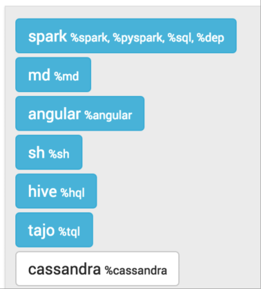

Cassandra CQL Interpreter for Apache Zeppelin
| Name | Class | Description |
|---|---|---|
| %cassandra | CassandraInterpreter | Provides interpreter for Apache Cassandra CQL query language |
Enabling Cassandra Interpreter
In a notebook, to enable the Cassandra interpreter, click on the Gear icon and select Cassandra

Using the Cassandra Interpreter
In a paragraph, use %cassandra to select the Cassandra interpreter and then input all commands.
To access the interactive help, type HELP;
Interpreter Commands
The Cassandra interpreter accepts the following commands
| Command Type | Command Name | Description |
|---|---|---|
| Help command | HELP | Display the interactive help menu |
| Schema commands | DESCRIBE KEYSPACE, DESCRIBE CLUSTER, DESCRIBE TABLES ... | Custom commands to describe the Cassandra schema |
| Option commands | @consistency, @retryPolicy, @fetchSize ... | Inject runtime options to all statements in the paragraph |
| Prepared statement commands | @prepare, @bind, @remove_prepared | Let you register a prepared command and re-use it later by injecting bound values |
| Native CQL statements | All CQL-compatible statements (SELECT, INSERT, CREATE ...) | All CQL statements are executed directly against the Cassandra server |
CQL statements
This interpreter is compatible with any CQL statement supported by Cassandra. Ex:
INSERT INTO users(login,name) VALUES('jdoe','John DOE');
SELECT * FROM users WHERE login='jdoe';
Each statement should be separated by a semi-colon ( ; ) except the special commands below:
- @prepare
- @bind
- @remove_prepare
- @consistency
- @serialConsistency
- @timestamp
- @retryPolicy
- @fetchSize
- @requestTimeOut
Multi-line statements as well as multiple statements on the same line are also supported as long as they are separated by a semi-colon. Ex:
USE spark_demo;
SELECT * FROM albums_by_country LIMIT 1; SELECT * FROM countries LIMIT 1;
SELECT *
FROM artists
WHERE login='jlennon';
Batch statements are supported and can span multiple lines, as well as DDL(CREATE/ALTER/DROP) statements:
BEGIN BATCH
INSERT INTO users(login,name) VALUES('jdoe','John DOE');
INSERT INTO users_preferences(login,account_type) VALUES('jdoe','BASIC');
APPLY BATCH;
CREATE TABLE IF NOT EXISTS test(
key int PRIMARY KEY,
value text
);
CQL statements are case-insensitive (except for column names and values). This means that the following statements are equivalent and valid:
INSERT INTO users(login,name) VALUES('jdoe','John DOE');
Insert into users(login,name) vAlues('hsue','Helen SUE');
The complete list of all CQL statements and versions can be found below:
| Cassandra Version | Documentation Link |
|---|---|
| 3.x | http://docs.datastax.com/en/cql/3.3/cql/cqlIntro.html |
| 2.2 | http://docs.datastax.com/en/cql/3.3/cql/cqlIntro.html |
| 2.1 & 2.0 | http://docs.datastax.com/en/cql/3.1/cql/cqlintroc.html |
| 1.2 | http://docs.datastax.com/en/cql/3.0/cql/aboutCQL.html |
Comments in statements
It is possible to add comments between statements. Single line comments start with the hash sign (#) or double slashes (//). Multi-line comments are enclosed between /** and **/. Ex:
#Single line comment style 1
INSERT INTO users(login,name) VALUES('jdoe','John DOE');
//Single line comment style 2
/**
Multi line
comments
**/
Insert into users(login,name) vAlues('hsue','Helen SUE');
Syntax Validation
The interpreters is shipped with a built-in syntax validator. This validator only checks for basic syntax errors.
All CQL-related syntax validation is delegated directly to Cassandra
Most of the time, syntax errors are due to missing semi-colons between statements or typo errors.
Schema commands
To make schema discovery easier and more interactive, the following commands are supported:
| Command | Description |
|---|---|
| DESCRIBE CLUSTER; | Show the current cluster name and its partitioner |
| DESCRIBE KEYSPACES; | List all existing keyspaces in the cluster and their configuration (replication factor, durable write ...) |
| DESCRIBE TABLES; | List all existing keyspaces in the cluster and for each, all the tables name |
| DESCRIBE TYPES; | List all existing keyspaces in the cluster and for each, all the user-defined types name |
| DESCRIBE FUNCTIONS; | List all existing keyspaces in the cluster and for each, all the functions name |
| DESCRIBE AGGREGATES; | List all existing keyspaces in the cluster and for each, all the aggregates name |
| DESCRIBE MATERIALIZED VIEWS; | List all existing keyspaces in the cluster and for each, all the materialized views name |
| DESCRIBE KEYSPACE <keyspacename>; | Describe the given keyspace configuration and all its table details (name, columns, ...) |
| DESCRIBE TABLE (<keyspacename>).<tablename>; | Describe the given table. If the keyspace is not provided, the current logged in keyspace is used. If there is no logged in keyspace, the default system keyspace is used. If no table is found, an error message is raised |
| DESCRIBE TYPE (<keyspacename>).<typename>; | Describe the given type(UDT). If the keyspace is not provided, the current logged in keyspace is used. If there is no logged in keyspace, the default system keyspace is used. If no type is found, an error message is raised |
| DESCRIBE FUNCTION (<keyspacename>).<functionname>; | Describe the given function. If the keyspace is not provided, the current logged in keyspace is used. If there is no logged in keyspace, the default system keyspace is used. If no function is found, an error message is raised |
| DESCRIBE AGGREGATE (<keyspacename>).<aggregatename>; | Describe the given aggregate. If the keyspace is not provided, the current logged in keyspace is used. If there is no logged in keyspace, the default system keyspace is used. If no aggregate is found, an error message is raised |
| DESCRIBE MATERIALIZED VIEW (<keyspacename>).<view_name>; | Describe the given view. If the keyspace is not provided, the current logged in keyspace is used. If there is no logged in keyspace, the default system keyspace is used. If no view is found, an error message is raised |
The schema objects (cluster, keyspace, table, type, function and aggregate) are displayed in a tabular format. There is a drop-down menu on the top left corner to expand objects details. On the top right menu is shown the Icon legend.
Runtime Parameters
Sometimes you want to be able to pass runtime query parameters to your statements.
Those parameters are not part of the CQL specs and are specific to the interpreter.
Below is the list of all parameters:
| Parameter | Syntax | Description |
|---|---|---|
| Consistency Level | @consistency=value | Apply the given consistency level to all queries in the paragraph |
| Serial Consistency Level | @serialConsistency=value | Apply the given serial consistency level to all queries in the paragraph |
| Timestamp | @timestamp=long value | Apply the given timestamp to all queries in the paragraph. Please note that timestamp value passed directly in CQL statement will override this value |
| Retry Policy | @retryPolicy=value | Apply the given retry policy to all queries in the paragraph |
| Fetch Size | @fetchSize=integer value | Apply the given fetch size to all queries in the paragraph |
| Request Time Out | @requestTimeOut=integer value | Apply the given request timeout in millisecs to all queries in the paragraph |
Some parameters only accept restricted values:
| Parameter | Possible Values |
|---|---|
| Consistency Level | ALL, ANY, ONE, TWO, THREE, QUORUM, LOCALONE, LOCALQUORUM, EACHQUORUM |
| Serial Consistency Level | SERIAL, LOCALSERIAL |
| Timestamp | Any long value |
| Retry Policy | DEFAULT, DOWNGRADINGCONSISTENCY, FALLTHROUGH, LOGGINGDEFAULT, LOGGINGDOWNGRADING, LOGGINGFALLTHROUGH |
| Fetch Size | Any integer value |
Please note that you should not add semi-colon ( ; ) at the end of each parameter statement
Some examples:
CREATE TABLE IF NOT EXISTS spark_demo.ts(
key int PRIMARY KEY,
value text
);
TRUNCATE spark_demo.ts;
// Timestamp in the past
@timestamp=10
// Force timestamp directly in the first insert
INSERT INTO spark_demo.ts(key,value) VALUES(1,'first insert') USING TIMESTAMP 100;
// Select some data to make the clock turn
SELECT * FROM spark_demo.albums LIMIT 100;
// Now insert using the timestamp parameter set at the beginning(10)
INSERT INTO spark_demo.ts(key,value) VALUES(1,'second insert');
// Check for the result. You should see 'first insert'
SELECT value FROM spark_demo.ts WHERE key=1;
Some remarks about query parameters:
- many query parameters can be set in the same paragraph
- if the same query parameter is set many time with different values, the interpreter only take into account the first value
- each query parameter applies to all CQL statements in the same paragraph, unless you override the option using plain CQL text (like forcing timestamp with the USING clause)
- the order of each query parameter with regard to CQL statement does not matter
Support for Prepared Statements
For performance reason, it is better to prepare statements before-hand and reuse them later by providing bound values.
This interpreter provides 3 commands to handle prepared and bound statements:
- @prepare
- @bind
- @remove_prepared
Example:
@prepare[statement-name]=...
@bind[statement-name]=’text’, 1223, ’2015-07-30 12:00:01’, null, true, [‘list_item1’, ’list_item2’]
@bind[statement-name-with-no-bound-value]
@remove_prepare[statement-name]
@prepare
You can use the syntax "@prepare[statement-name]=SELECT..." to create a prepared statement. The statement-name is mandatory because the interpreter prepares the given statement with the Java driver and saves the generated prepared statement in an internal hash map, using the provided statement-name as search key.
Please note that this internal prepared statement map is shared with all notebooks and all paragraphs because there is only one instance of the interpreter for Cassandra
If the interpreter encounters many @prepare for the same statement-name (key), only the first statement will be taken into account.
Example:
@prepare[select]=SELECT * FROM spark_demo.albums LIMIT ?
@prepare[select]=SELECT * FROM spark_demo.artists LIMIT ?
For the above example, the prepared statement is SELECT * FROM spark_demo.albums LIMIT ?.
`SELECT * FROM spark_demo.artists LIMIT ? is ignored because an entry already exists in the prepared statements map with the key select.
In the context of Zeppelin, a notebook can be scheduled to be executed at regular interval, thus it is necessary to avoid re-preparing many time the same statement (considered an anti-pattern).
@bind
Once the statement is prepared (possibly in a separated notebook/paragraph). You can bind values to it:
@bind[select_first]=10
Bound values are not mandatory for the @bind statement. However if you provide bound values, they need to comply to some syntax:
- String values should be enclosed between simple quotes ( ‘ )
- Date values should be enclosed between simple quotes ( ‘ ) and respect the formats:
- yyyy-MM-dd HH:MM:ss
- yyyy-MM-dd HH:MM:ss.SSS
- null is parsed as-is
- boolean (true|false) are parsed as-is
- collection values must follow the standard CQL syntax:
- list: [‘listitem1’, ’listitem2’, ...]
- set: {‘setitem1’, ‘setitem2’, …}
- map: {‘key1’: ‘val1’, ‘key2’: ‘val2’, …}
- tuple values should be enclosed between parenthesis (see Tuple CQL syntax): (‘text’, 123, true)
- udt values should be enclosed between brackets (see UDT CQL syntax): {streename: ‘Beverly Hills’, number: 104, zipcode: 90020, state: ‘California’, …}
It is possible to use the @bind statement inside a batch:
BEGIN BATCH @bind[insert_user]='jdoe','John DOE' UPDATE users SET age = 27 WHERE login='hsue'; APPLY BATCH;
@remove_prepare
To avoid for a prepared statement to stay forever in the prepared statement map, you can use the @remove_prepare[statement-name] syntax to remove it. Removing a non-existing prepared statement yields no error.
Using Dynamic Forms
Instead of hard-coding your CQL queries, it is possible to use Zeppelin dynamic form syntax to inject simple value or multiple choices forms.
The legacy mustache syntax ( {{ }} ) to bind input text and select form is still supported but is deprecated and will be removed in future releases.
Legacy The syntax for simple parameter is: {{input_Label=default value}}. The default value is mandatory because the first time the paragraph is executed, we launch the CQL query before rendering the form so at least one value should be provided.
The syntax for multiple choices parameter is: {{input_Label=value1 | value2 | … | valueN }}. By default the first choice is used for CQL query the first time the paragraph is executed.
Example:
#Secondary index on performer style
SELECT name, country, performer
FROM spark_demo.performers
WHERE name='${performer=Sheryl Crow|Doof|Fanfarlo|Los Paranoia}'
AND styles CONTAINS '${style=Rock}';
In the above example, the first CQL query will be executed for performer='Sheryl Crow' AND style='Rock'. For subsequent queries, you can change the value directly using the form.
Please note that we enclosed the ${ } block between simple quotes ( ' ) because Cassandra expects a String here. We could have also use the ${style='Rock'} syntax but this time, the value displayed on the form is 'Rock' and not Rock.
It is also possible to use dynamic forms for prepared statements:
@bind[select]=='${performer=Sheryl Crow|Doof|Fanfarlo|Los Paranoia}', '${style=Rock}'
Shared states
It is possible to execute many paragraphs in parallel. However, at the back-end side, we’re still using synchronous queries.
Asynchronous execution is only possible when it is possible to return a Future value in the InterpreterResult.
It may be an interesting proposal for the Zeppelin project.
Recently, Zeppelin allows you to choose the level of isolation for your interpreters (see Interpreter Binding Mode ).
Long story short, you have 3 available bindings:
- shared : same JVM and same Interpreter instance for all notes
- scoped : same JVM but different Interpreter instances, one for each note
- isolated: different JVM running a single Interpreter instance, one JVM for each note
Using the shared binding, the same com.datastax.driver.core.Session object is used for all notes and paragraphs.
Consequently, if you use the USE keyspace name; statement to log into a keyspace, it will change the keyspace for
all current users of the Cassandra interpreter because we only create 1 com.datastax.driver.core.Session object
per instance of Cassandra interpreter.
The same remark does apply to the prepared statement hash map, it is shared by all users using the same instance of Cassandra interpreter.
When using scoped binding, in the same JVM Zeppelin will create multiple instances of the Cassandra interpreter, thus
multiple com.datastax.driver.core.Session objects. Beware of resource and memory usage using this binding !
The isolated mode is the most extreme and will create as many JVM/com.datastax.driver.core.Session object as there are distinct notes.
Interpreter Configuration
To configure the Cassandra interpreter, go to the Interpreter menu and scroll down to change the parameters. The Cassandra interpreter is using the official Cassandra Java Driver and most of the parameters are used to configure the Java driver
Below are the configuration parameters and their default value.
| Property Name | Description | Default Value |
|---|---|---|
| cassandra.cluster | Name of the Cassandra cluster to connect to | Test Cluster |
| cassandra.compression.protocol | On wire compression. Possible values are: NONE, SNAPPY, LZ4 | NONE |
| cassandra.credentials.username | If security is enable, provide the login | none |
| cassandra.credentials.password | If security is enable, provide the password | none |
| cassandra.hosts |
Comma separated Cassandra hosts (DNS name or IP address).
Ex: '192.168.0.12,node2,node3' |
localhost |
| cassandra.interpreter.parallelism | Number of concurrent paragraphs(queries block) that can be executed | 10 |
| cassandra.keyspace | Default keyspace to connect to. It is strongly recommended to let the default value and prefix the table name with the actual keyspace in all of your queries | system |
| cassandra.load.balancing.policy | Load balancing policy. Default = new TokenAwarePolicy(new DCAwareRoundRobinPolicy()) To Specify your own policy, provide the fully qualify class name (FQCN) of your policy. At runtime the interpreter will instantiate the policy using Class.forName(FQCN) | DEFAULT |
| cassandra.max.schema.agreement.wait.second | Cassandra max schema agreement wait in second | 10 |
| cassandra.pooling.core.connection.per.host.local | Protocol V2 and below default = 2. Protocol V3 and above default = 1 | 2 |
| cassandra.pooling.core.connection.per.host.remote | Protocol V2 and below default = 1. Protocol V3 and above default = 1 | 1 |
| cassandra.pooling.heartbeat.interval.seconds | Cassandra pool heartbeat interval in secs | 30 |
| cassandra.pooling.idle.timeout.seconds | Cassandra idle time out in seconds | 120 |
| cassandra.pooling.max.connection.per.host.local | Protocol V2 and below default = 8. Protocol V3 and above default = 1 | 8 |
| cassandra.pooling.max.connection.per.host.remote | Protocol V2 and below default = 2. Protocol V3 and above default = 1 | 2 |
| cassandra.pooling.max.request.per.connection.local | Protocol V2 and below default = 128. Protocol V3 and above default = 1024 | 128 |
| cassandra.pooling.max.request.per.connection.remote | Protocol V2 and below default = 128. Protocol V3 and above default = 256 | 128 |
| cassandra.pooling.new.connection.threshold.local | Protocol V2 and below default = 100. Protocol V3 and above default = 800 | 100 |
| cassandra.pooling.new.connection.threshold.remote | Protocol V2 and below default = 100. Protocol V3 and above default = 200 | 100 |
| cassandra.pooling.pool.timeout.millisecs | Cassandra pool time out in millisecs | 5000 |
| cassandra.protocol.version | Cassandra binary protocol version | 4 |
| cassandra.query.default.consistency |
Cassandra query default consistency level
Available values: ONE, TWO, THREE, QUORUM, LOCALONE, LOCALQUORUM, EACHQUORUM, ALL |
ONE |
| cassandra.query.default.fetchSize | Cassandra query default fetch size | 5000 |
| cassandra.query.default.serial.consistency |
Cassandra query default serial consistency level
Available values: SERIAL, LOCALSERIAL |
SERIAL |
| cassandra.reconnection.policy | Cassandra Reconnection Policy. Default = new ExponentialReconnectionPolicy(1000, 10 * 60 * 1000) To Specify your own policy, provide the fully qualify class name (FQCN) of your policy. At runtime the interpreter will instantiate the policy using Class.forName(FQCN) | DEFAULT |
| cassandra.retry.policy | Cassandra Retry Policy. Default = DefaultRetryPolicy.INSTANCE To Specify your own policy, provide the fully qualify class name (FQCN) of your policy. At runtime the interpreter will instantiate the policy using Class.forName(FQCN) | DEFAULT |
| cassandra.socket.connection.timeout.millisecs | Cassandra socket default connection timeout in millisecs | 500 |
| cassandra.socket.read.timeout.millisecs | Cassandra socket read timeout in millisecs | 12000 |
| cassandra.socket.tcp.no_delay | Cassandra socket TCP no delay | true |
| cassandra.speculative.execution.policy | Cassandra Speculative Execution Policy. Default = NoSpeculativeExecutionPolicy.INSTANCE To Specify your own policy, provide the fully qualify class name (FQCN) of your policy. At runtime the interpreter will instantiate the policy using Class.forName(FQCN) | DEFAULT |
Change Log
3.0 (Zeppelin 0.7.2) :
- Update documentation
- Update interactive documentation
- Add support for binary protocol V4
- Implement new
@requestTimeOutruntime option - Upgrade Java driver version to 3.0.1
- Allow interpreter to add dynamic forms programmatically when using FormType.SIMPLE
- Allow dynamic form using default Zeppelin syntax
- Fixing typo on FallThroughPolicy
- Look for data in AngularObjectRegistry before creating dynamic form
- Add missing support for
ALTERstatements
2.0 (Zeppelin 0.7.2) :
- Update help menu and add changelog
- Add Support for User Defined Functions, User Defined Aggregates and Materialized Views
- Upgrade Java driver version to 3.0.0-rc1
1.0 (Zeppelin 0.5.5-incubating) :
- Initial version
Bugs & Contacts
If you encounter a bug for this interpreter, please create a JIRA ticket and ping me on Twitter at @doanduyhai